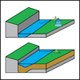

aggradation

Definition: Aggradation (or alluviation) is the term used in geology for the increase in land elevation, typically in a river system, due to the deposition of sediment. Aggradation occurs in areas in which the supply of sediment is greater than the amount of material that the system is able to transport. The mass balance between sediment being transported and sediment in the bed is described by the Exner equation.
Source: Wikipedia
Wikipedia Page
Wikidata Page